マンガでNISAの基本を学べるサービス「KABU STORY」のLP。投資に興味はあるのに一歩が出ない28歳の主人公を軸に、マンガの感情の流れをそのままLPの導線にしました。ペルソナ設計、AIによるキャラクター画像の生成、縦読みマンガの実装、登録フォームの連携まで担当しています。
A landing page for KABU STORY, a service that teaches the basics of NISA (Japan's tax-free investment account) through manga. The emotional arc of the comic doubles as the page's conversion path. I handled the persona, AI-generated characters, the scrolling manga built in code, and the sign-up form.
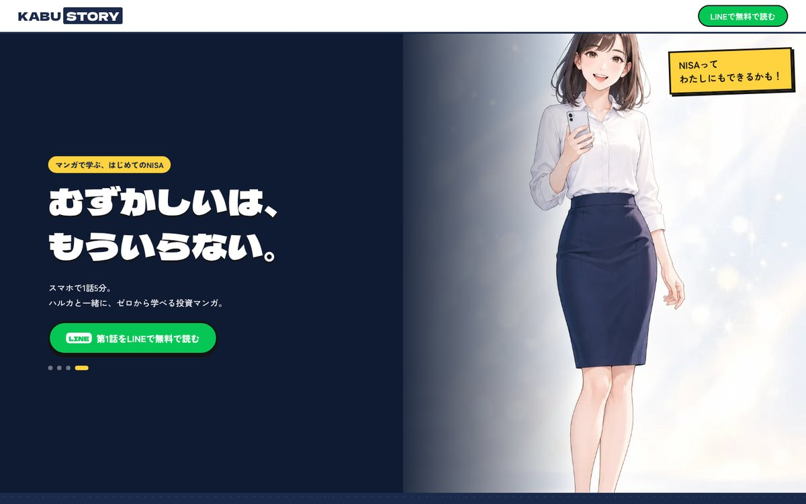
NISAが始まって、まわりから「始めたよ」の声が聞こえる。気にはなっているのに、調べるほど専門用語が増えて、結局また後回しになる。
Friends say they've started. The interest is there — but every search adds more jargon, and it gets pushed back again.
このサービスの課題は、投資の魅力を伝えることではなく、「難しそう」「何から始めればいいかわからない」「損するのが怖い」という3つの壁を、読む負担なしで越えてもらうことでした。
The job wasn't to sell investing. It was to get people past three walls — "it looks hard," "I don't know where to start," "I'm scared of losing money" — without making them read a textbook.
ターゲット像をそのままマンガの主人公にしました。28歳・事務職・一人暮らしのハルカ。手取りは悪くないのに、なぜか貯まらない。読者が「これ、私のことだ」と感じた時点で、ページを読み進める理由ができます。
The target reader became the protagonist: Haruka, 28, office worker, living alone, earning enough but never quite saving. The moment readers think "that's me," they have a reason to keep scrolling.
調べるほど用語が増えて、読む気がなくなる。
Every search adds more jargon.
口座？枠？ファンド？順番がわからない。
Account? Allowance? Fund? The order is unclear.
わからないまま始めることへの不安。
Starting without understanding feels risky.
マンガを「LPの中の1コンテンツ」にせず、LP全体をハルカの感情の変化に沿って並べました。FVで不安に共感し、先輩のタクミとの出会いで解決策を示し、試し読みで「わかる」を体験してもらう。最後の「私にもできるかも」という気持ちのまま、LINE登録につなげています。
The manga isn't one block on the page — the whole page follows Haruka's change of heart. Empathy in the hero, a solution through her colleague Takumi, a taste of "I get it" in the free chapter, and the final "maybe I can do this" carries straight into the LINE sign-up.
各セクションに1コマずつキャラクターを置き、
キャラのセリフがそのままコピーになるよう設計。
One character moment per section, and the characters' lines double as the copy.
キャラクター画像10点はChatGPTで生成しました。AI画像は1枚ごとに顔や服装が変わりやすいため、最初に3人の見た目と服装を固定する宣言を送り、笑顔の全身画像を「基準」として先に確定。そのうえで、全10枚を同じチャット内で生成しています。
All ten character images were generated with ChatGPT. Since AI drifts on faces and outfits, I opened with a fixed spec for all three characters, locked a full-body "reference" image first, and produced every image in a single chat.
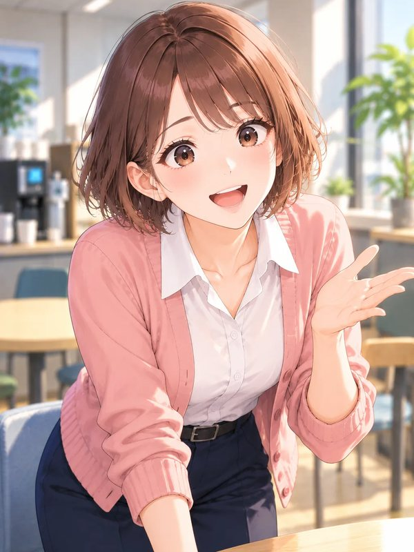
ミホMiho背中を押す同期The friend who nudges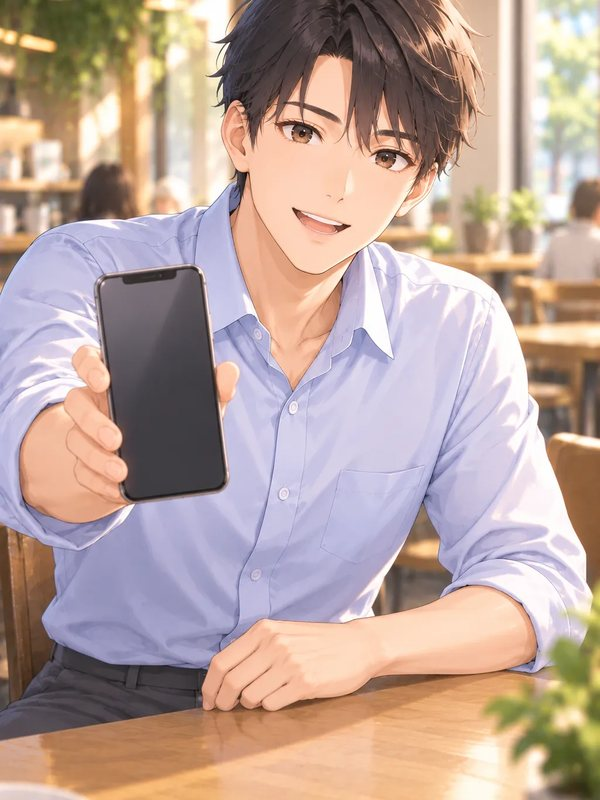
タクミTakumi同じ目線の先輩A mentor at eye levelプロンプトには「画像に文字や吹き出しを入れない」「顔は画面の中央に」という指示も加えました。LP上で切り抜いたり、セリフを重ねたりしやすくするためです。
Prompts also asked for no text or speech bubbles and a centred face, so each image could be cropped and lettered freely on the page.
試し読みの縦読みマンガは、マンガ編集ツールで1枚絵にせず、HTML/CSSで組みました。コマ割り・吹き出し・集中線・飛び散る金融用語まですべてコードです。AI画像で日本語が崩れる心配がなく、セリフを直すときもテキストを1行書き換えるだけで済みます。
The free chapter isn't a flattened image from a comic app — panels, speech bubbles, speed lines and flying jargon are all HTML/CSS. No garbled AI lettering, and changing a line of dialogue is a one-line text edit.
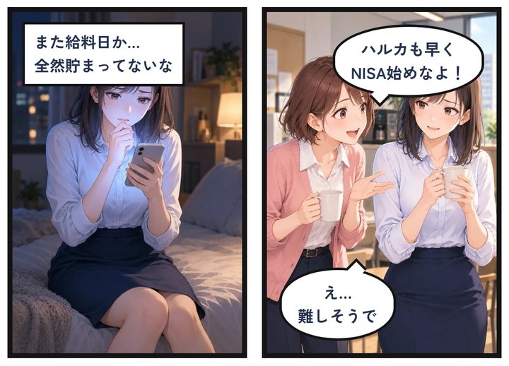
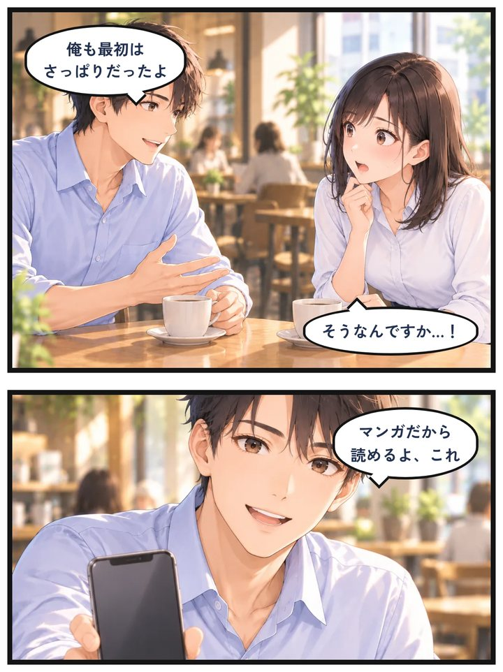
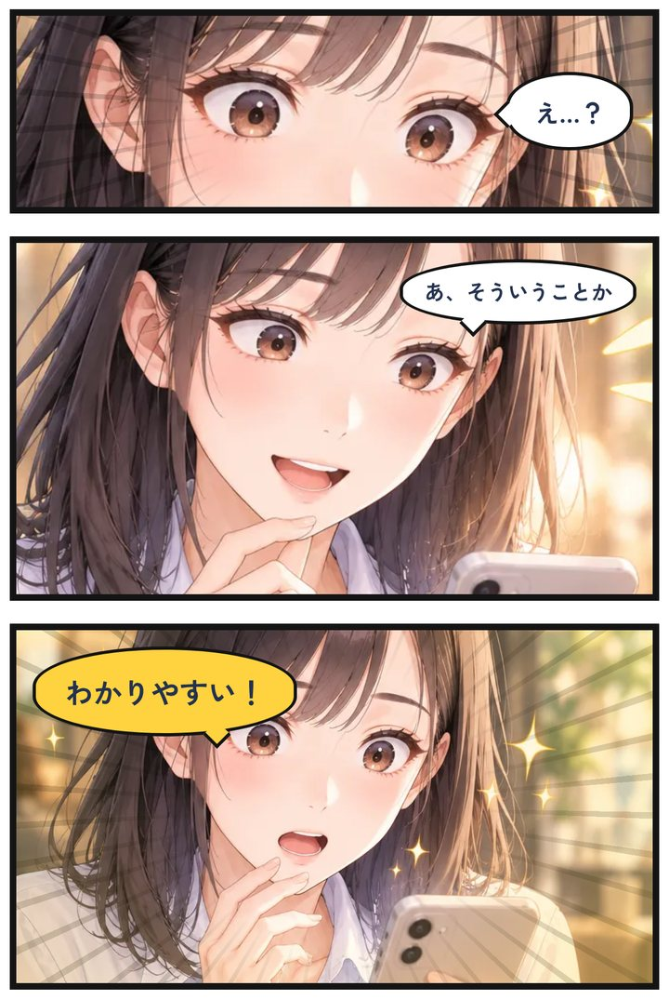
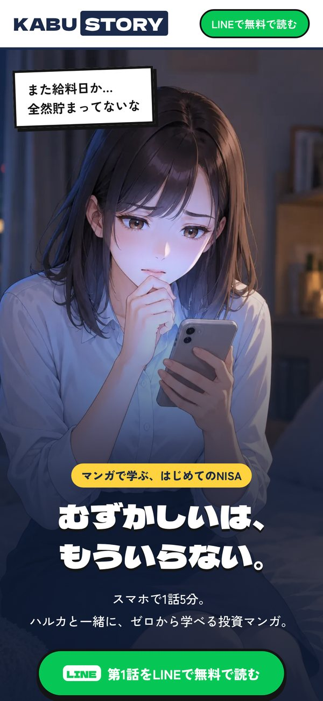
投資をテーマにする以上、「儲かる」「絶対」「損しない」のような断定表現は使えません。全文をNGワードリストでチェックし、ベネフィットも「利益」ではなく「理解できるようになること」に絞りました。FAQでは特定の商品をすすめないことを明記し、フッターにはリスクの注意書きを入れています。
Investment copy can't promise returns. Every line was checked against a banned-phrase list, the benefits are about understanding rather than profit, the FAQ states that no products are recommended, and the footer carries a risk disclosure.
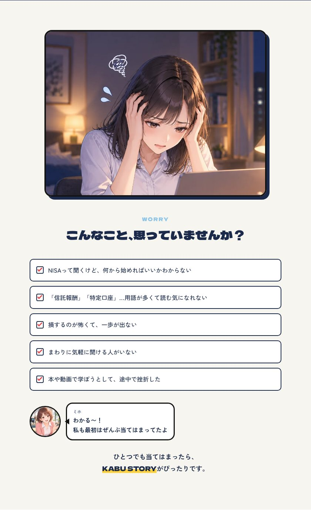
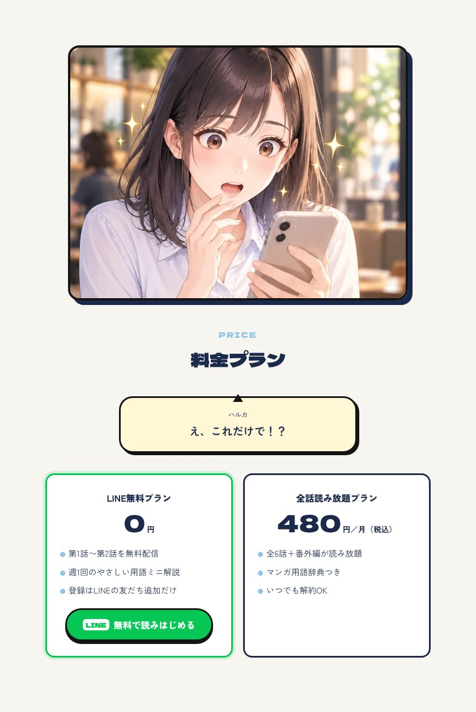
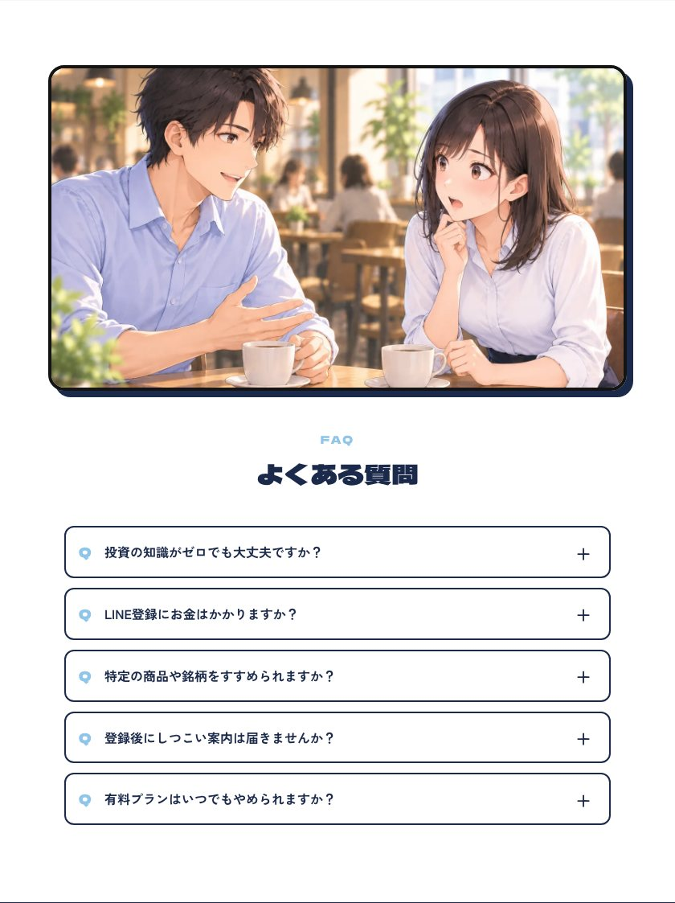
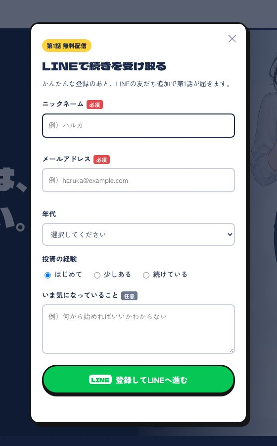
主人公の気持ちが変わる順番にセクションを並べると、CTAが「売り込み」ではなく物語の続きになりました。
Ordering sections by how the heroine feels turned the CTA into the next page of the story rather than a pitch.
キャラの設定と基準画像を最初に固めたことで、10枚を通して同じ人物として見せられました。
Locking the spec and a reference image up front kept the same three people across all ten images.
セリフを画像に入れずコードで重ねたことで、修正・翻訳・差し替えのどれにも強い作りになりました。
Lettering in code instead of in the image makes edits, translation and swaps painless.
LPのデザインだけでなく、ペルソナ設計・キャラクター・広告動画・実装・公開まで一貫してお手伝いできます。日本語・英語・スペイン語の制作に対応しています。
I can help with the whole thing — persona, characters, ad creative, front-end and launch — in Japanese, English or Spanish.